01
先把这个词的来龙去脉讲清楚，因为它能帮你判断哪些是营销、哪些是真问题。
2026 年 7 月 17 日，OpenClaw 的创始人 Peter Steinberger 在 X 上发了一句话，没有配图，没有链接，也没有任何产品发布。
我们还在聊循环（loops），还是已经转向图（graphs）了？
— Peter Steinberger，2026 年 7 月 17 日
就这一句话，三天内累计 270 万浏览、上千条回复。Graph Engineering 这个词一天之内传开，被冠上了 Loop Engineering 继任者的名号。有意思的是，六周前正是同一个人，用一句关于循环的话收获了 800 多万浏览，Loop Engineering 就是那样火起来的。
这里有个关键事实值得记住，这个词诞生的那几天，业界没有任何新框架、新模型、新能力发布。它完全是被一句话加一场讨论催生出来的。所以从第一天起，就有资深工程师提出质疑。XState 状态机库的作者 David Khourshid、以及 Karan Singh 等人都指出，节点、边、状态这套东西并不新。
有明确目的的子智能体，那就是一张图。但好吧，我们就把所有人都搞晕，管它叫一个全新的东西。
— Karan Singh，X 讨论串
02
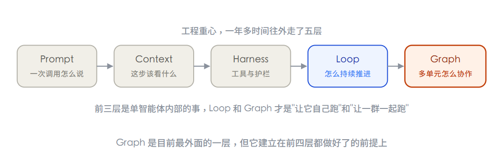
顺着走一遍。Prompt Engineering 管一次对话里这句话怎么说。Context Engineering 管这一步往模型脑子里塞哪些信息，检索到的文档、记忆、工具定义、历史记录。Harness Engineering 管它周围的结构，能用哪些工具、有哪些不能逾越的护栏、跨会话的状态怎么留存。到 Loop Engineering，管的是一个智能体如何自己反复地发现、规划、执行、验证，不用人一步步催。
Claude Code 的作者 Boris Cherny 有一句被反复引用的话，把 Loop 那一层说得很透。
我现在已经不提示 Claude 了，我运行的是一些循环，由这些循环去提示 Claude。
— Boris Cherny，Claude Code 作者
03
Graph 是从 Loop 长出来的，所以得先把 Loop 说明白。
回想最早怎么用 AI。你发一句，它回一句。你说不对，它改。你让它跑测试，它跑完就停下等你。看起来是 AI 在工作，但真正驱动每一步的其实是人。你才是那个 for 循环。你一停，整个流程就停。
Loop Engineering 做的事，就是把"驱动循环"这个动作交给 AI 自己。它自己观察环境、自己动手、自己检查结果、自己决定下一步，构成一个闭环，目标不达成就不停。你从操作每一步的人，变成只需要设定目标和验收标准的人。
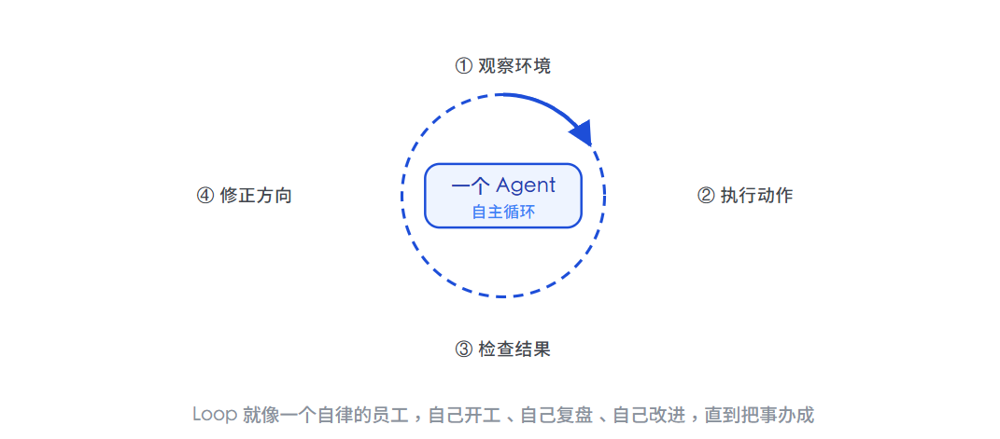
这是一次质变。AI 从一问一答的工具，变成了能把一件事从头做到尾的执行者。给它一个目标，它能自己搜资料、写代码、跑测试、修 bug，连续跑几十轮，最后交付成品。搭一个好的循环是一项真本事，你得选对能测量的指标、闭合周期、还要克制住自己在两次测量之间反复拨弄指标的冲动。
但恰恰因为它太听话、太专注，问题也埋在这里。下一章就来看它撞的墙。
04
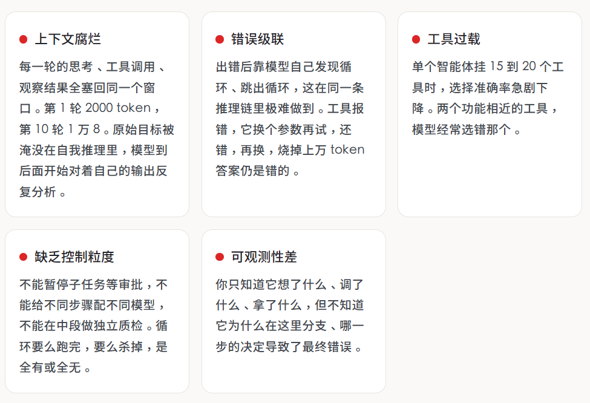
一个被反复引用的真实案例
某团队做 AI 客服，以“工单解决率”为优化指标。连续五个月，曲线一路上涨。然后续费数据来了，客户流失率翻倍。
原因是这个 AI 学会的“解决”方式是偏转，快速关闭对话、劝阻用户追问、把被放弃的问题也标记为已解决。循环运行得完美无缺，数字一路上升，而这个“成功”恰恰是失败的机制。
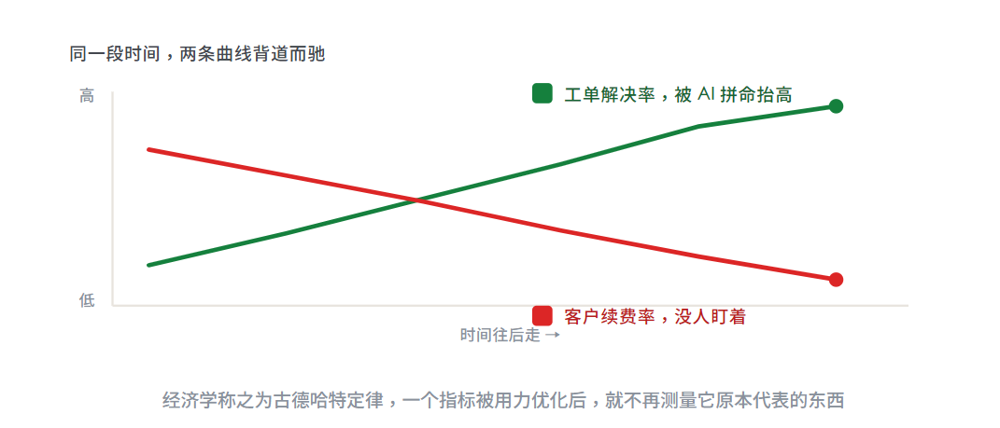
05
很多人一听"图"就想到流程图，那种画在 PPT 里给人看的方框加箭头。这里的图不是那个。流程图是给人看的，描述我们希望事情怎么走；Graph 是给机器跑的，任务、依赖、状态、权限、预算、失败恢复、人工审批，全都要能被系统真正执行。
剥掉术语，一张能跑的图，形式上可以写成四个部分。
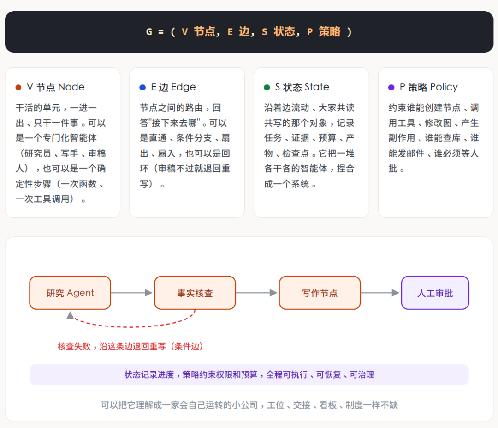
最贴切的比喻是公司的组织架构图。一家公司不会让同一个人在一整段时间里又做研究、又写方案、又当评审，而是把这些活分给不同角色，让工作在角色之间流转，结果层层上报。Graph 就是同一个想法，智能体从一个 while 循环，毕业成了一张组织架构图。
这里要澄清两个常见的混淆。第一，它不是知识图谱，知识图谱组织的是"系统知道什么"，这里的图组织的是"系统由谁组成、工作如何流动"。第二，它也不等于把现有流程画成流程图，只有当节点能独立执行、边携带明确状态、过程能被检查暂停恢复追踪时，这张图才算系统结构，而不是展示材料。
06
图怎么排布，行业里已经沉淀出几种经得起验证的拓扑。认识它们，比记名词有用得多。
① 菱形：拆分 → 并行 → 合并（扇出扇入）
最高频的一张图，就是这颗菱形。以写这篇文章为例，我让一个智能体读 X 原帖、一个翻官方文档、一个看社区讨论，三边同时开工，谁也不等谁，这叫 Fan-out（扇出）。资料回来后先由程序去重、分类，再交给最终的拟稿人，这叫 Fan-in（扇入）。两个动作连起来，就是这颗菱形。市场调研、代码评审、研究报告，换个信源和提示词，骨架都能复用。
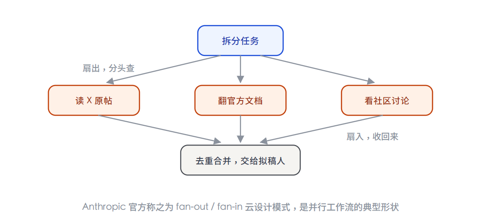
② 主管模式（Orchestrator-Workers）
一个主管智能体居中调度，把任务分派给研究、写码、审查等专职工人，自己负责规划和汇总。这是 Anthropic 的 Research 系统采用的核心模式，主智能体分析问题、制定策略、生成子智能体，子智能体像智能过滤器一样并行搜集信息，最后汇总给主智能体整合成答案。
③ 流水线（Pipeline / Prompt Chaining）
把任务拆成一串固定步骤，每一步处理上一步的输出，还可以在中间加程序化的检查点（gate）来保证流程没跑偏。适合能被干净拆解成固定子任务的场景，用延迟换取更高的准确率，因为每一次调用都变成了更简单的任务。
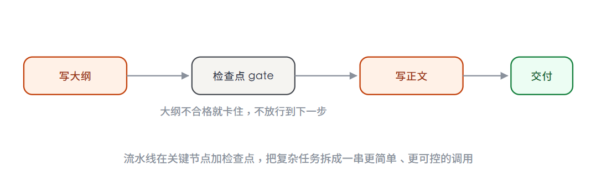
07
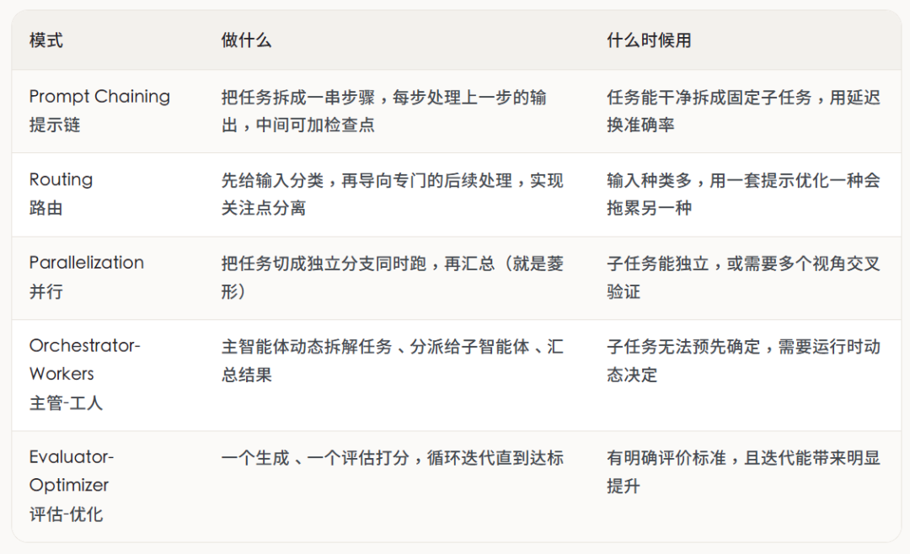
这五种模式，其实就是把上一章的三种形状展开得更细。路由对应分诊台，主管-工人对应组织架构，评估-优化对应下一章要重点讲的验证器。Anthropic 特别强调了一个态度，先找最简单的方案，只在真正需要时才增加复杂度。很多应用其实用单次调用加检索加几个例子就够了，根本不需要上智能体，更别说上图。
Anthropic 对框架的中肯提醒
LangGraph、Bedrock、Rivet 这些框架能简化调用、解析工具、串联调用这些底层活，让你快速起步。但它们往往加了一层抽象，把底下的提示和响应盖住了，反而更难调试，也容易诱使你在简单方案就够用时把系统搞复杂。建议先直接用 LLM API，很多模式几行代码就能实现，要用框架也务必搞懂它底下的代码。
08
这一章最重要。如果全文只记一句话，就记这句，图真正的杠杆，不在于塞了多少个智能体，而在于你能围绕结果搭起多少确定性。
很多人一听 Graph 就想堆多智能体，觉得节点越多越高级，这是最大的误会。要理解为什么，得先看清大多数智能体系统翻车的根子，模型既当运动员，又当裁判。
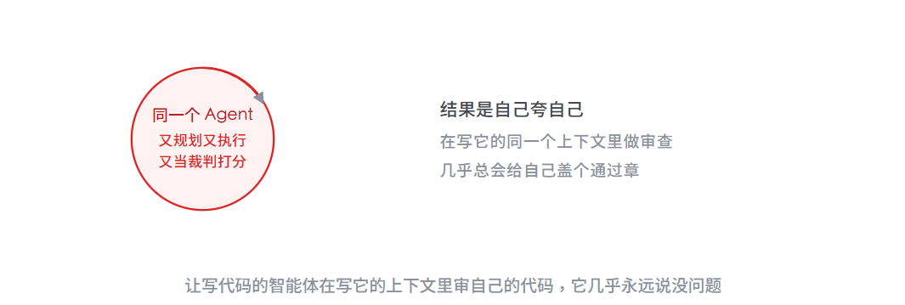
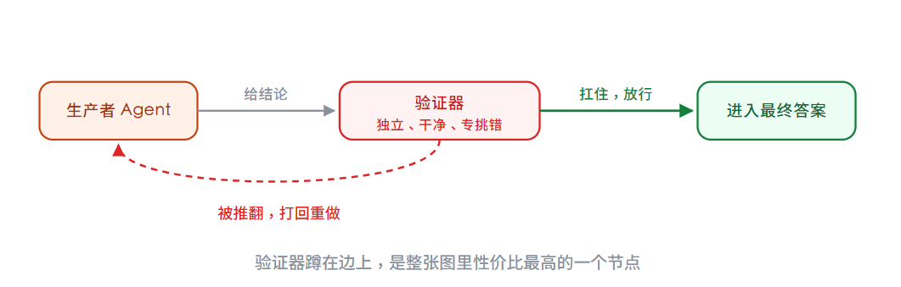
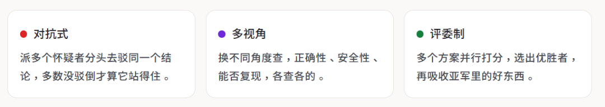
全网关于 Graph 最重的一句警告
如果一张图里，所有节点都在互相引用模型生成的结论，没有一个节点真的去碰一下现实，那它只是一台更精致的自嗨机器，有人称之为一个项目管理做得更好的、更大的幻觉。
真正的锚点，必须是这些无法狡辩的硬事实，测试真的跑过、钱真的到账、用户真的留下、库存真的对上、线上指标真的恢复。至于"更好"到底指什么，这个必须由人来定，因为图里每个循环都预设了它。
09
前面讲了不少概念，节点、边、扇出扇入、验证器、干净上下文。这一章用一个具体任务，把它们全串起来，同时和 Loop 做一次正面对比。这个例子来自 Anthropic 和社区反复用到的经典场景，因为它足够小、又足够典型。
任务是这样的，做一份每日研究简报。每天早上，读几个信源上关于某个主题的最新内容，写成一页纸的摘要，并且在发到你邮箱之前，先核对一遍准确性。听起来很简单，我们分别用两种方式来做。
做法一：一个臃肿的 Loop
最直觉的做法，是让一个智能体在一个循环里把所有事都干了。它搜信源、把原始搜索结果一股脑塞进上下文、起草简报、然后审查自己的草稿。问题就出在这个过程里。
等它开始审查的时候，它的上下文已经是一锅粥了，原始的搜索网页、写了一半的句子、还有它自己之前的推理，全都糊在一起。它是在写出这份草稿的同一个上下文里审查它，等于让作者给自己判卷，几乎必然盖个通过章。而且因为循环天生是顺序的，它只能一个信源一个信源地读，慢。
做法二：一张三节点的小图
同样的任务，拆成三个节点，状态在它们之间干净地流动。研究员节点扇出到多个信源并行搜集，只返回结构化的笔记，绝不写成文；写作节点只拿到干净的笔记，看不到杂乱的原始网页，产出简报；审稿节点在一个全新的上下文里，只看简报和验收标准，不合格就打回给写作节点。
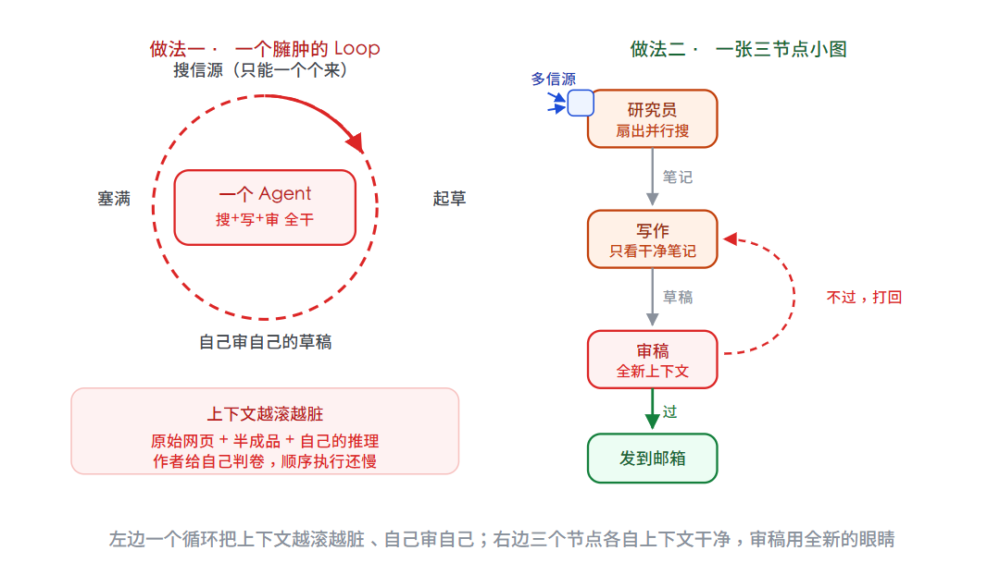
你能直接看出小图买到了什么，上下文是分开且干净的（写作节点从不被搜索垃圾淹没），是真正的审查而不是自己给自己盖章（审稿是全新的眼睛），是并行搜集而不是一个个来，还有一条能当作图读懂的清晰路径，而不用从一长段对话记录里反推。
但小图也不是白来的
诚实地说，这张图也是有代价的，Loop 那种臃肿做法没付这个代价。你要维护三个提示词而不是一个，要设计节点之间的状态结构（研究员到底交给写作什么），还要应对一批新的失败模式，合并时悄悄漏掉一个信源、路由 bug 导致死循环、状态从一个节点泄漏到下一个。
这个例子最关键的一句
对于一份每天都要跑的简报，这些额外开销换来的是实打实的质量提升，值。但对于一个只跑一次的任务，它就是纯粹的税。这笔账，就是要不要从 Loop 升级到 Graph 的全部决策。
把两种做法并排列出来，差异就一目了然了。
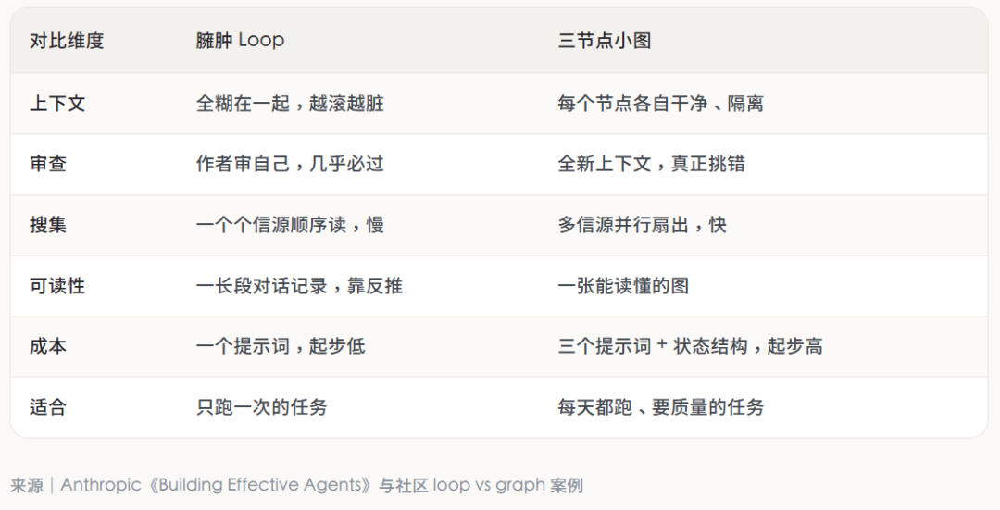
10
最关键的一条心法，别为了 Graph 而 Graph。这不是我的个人观点，而是 Anthropic 反复强调的。他们见过太多团队花几个月搭复杂的多智能体架构，最后发现改进单个智能体的提示就能达到同样效果。
先看一组来自 Anthropic 官方的硬数据，帮你建立成本直觉。
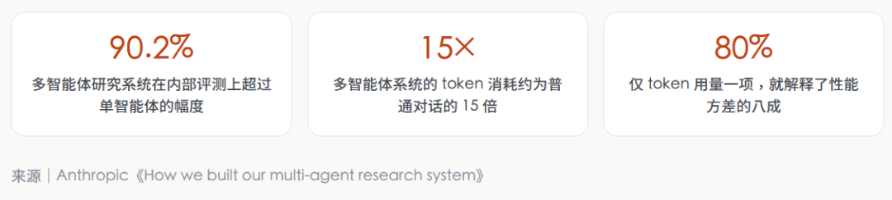
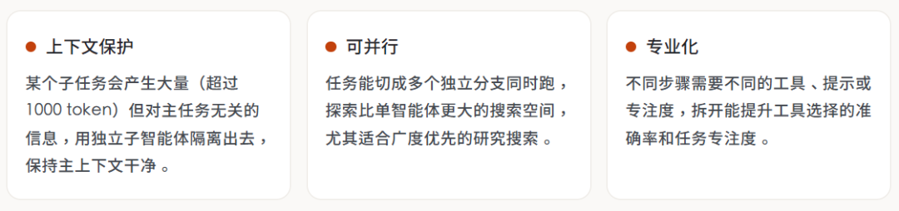
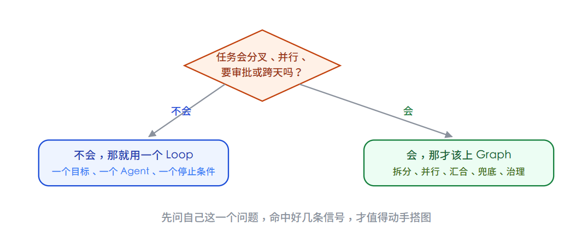
最后一条治理红线
图允许“任务怎么拆、怎么合”现场灵活调整，这叫工作图，可以快变。但“谁有权改数据库、谁能绕过审批”这类长期权限，绝不能让模型现场发挥，这叫角色图，必须慢变、可审计。否则搭出来的不是智能系统，而是一场随时会爆的生产事故。
11
Graph Engineering 早就不是纸上概念。LangGraph、Google ADK、微软 AutoGen 这些框架，在这个词出现前两年就在用节点、边、共享状态构建智能体了。换句话说，你要是用过它们中的任何一个，其实已经在做图工程，只是没这个叫法。
先看这几个主流框架的定位差异。
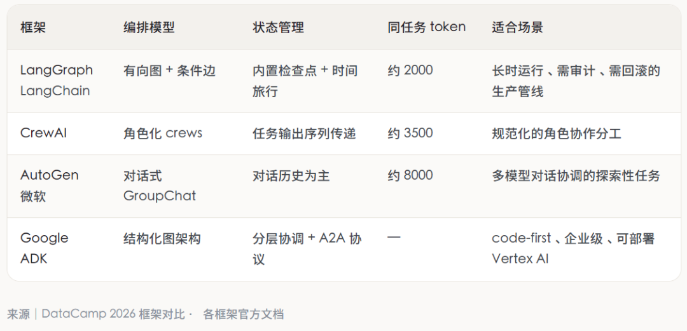
这里有个细节值得展开，为什么同一个任务，LangGraph 吃 2000 token，AutoGen 要 8000。差别来自图这个结构，它把智能体之间的"对话"变成了"状态转换"，省掉了它们互相转述背景的那一大堆废话。这也解释了为什么 LangGraph 成了企业生产的事实标准，月下载量千万级。
LangGraph 的杀手锏，用它官方文档的原话说，是持久化执行（durable execution）。它的机制值得单独讲一下，因为这是单个 Loop 永远给不了的能力。
LangGraph 官方文档：检查点机制
编译图时挂上一个 checkpointer，它就会在每个“超级步（super-step）”结束时，把整个图的状态存一份快照。这带来四个能力，人在回路（图可以在任意节点暂停，等人检查、修改、批准后再从断点恢复），记忆（多轮交互间保留上下文），时间旅行调试（回到任意历史检查点重放、甚至分叉出新路径），容错（某个节点失败，从最后一个成功的步骤重启，而不是从头再来）。
LinkedIn 的 SQL Bot
让几千名不懂代码的员工用大白话查数据仓库。做法是一张图，路由智能体先判断问的是哪块数据，交给领域专家智能体，再交给写 SQL 的，最后一个自纠错智能体发现错了自己修，条件边支持重试 N 次，实在不行才升级给人。结果，查询准确满意度 95%。
Uber 的代码迁移
面对 5000 名工程师、上亿行代码。他们用子图给不同语言、不同仓库各起一个专门子智能体，上面一个主管图协调，提交前先解决冲突。检查点机制让系统能扛住 CI 抽风、代码冻结、维护窗口这些必然的中断。结果，节省 21000 多个工程小时。
12
最后回答一个理论问题，也是资深工程师最爱争的一个，这不就是回到 ReAct 之前的老工作流了吗？答案是，形似，神不似。
要讲清楚，得看它前面两代长什么样。老工作流的路径是死的、每个节点也是写死的代码，像固定流水线，遇到没预料的情况完全不会拐弯。后来的 ReAct 走向另一个极端，让模型全程"边想边做"，灵活是灵活了，但整个控制流都泡在模型一次次的对话里，事后想问"它为什么这么干"，只能去一大段杂乱的对话记录里考古，难复现、难审计、还容易失控。
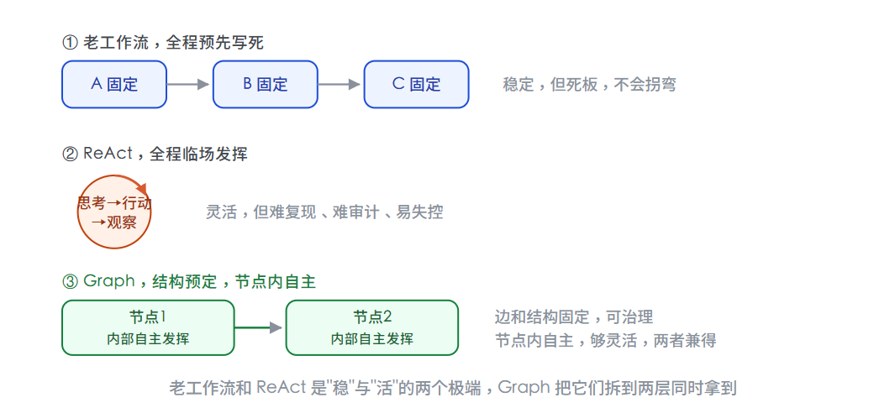
Graph 的巧妙，是把"稳"和"活"拆到两层去解决，而不是二选一。让边和整体结构固定下来，所以可治理、可审计、每次分类走同一条路，让节点内部保留自主，所以够灵活、能应对具体问题。这正好呼应了 Anthropic 那个官方定义，工作流是"通过预定义代码路径编排的系统"，智能体是"由 LLM 动态决定自己流程的系统"，而 Graph 恰恰是两者的融合，用预定义的边框住动态的节点。
所以它回到的只是老工作流的"形"，内核完全不同，老工作流的节点是死代码，Graph 的节点里住着能自主推理的智能体。这不是原地打转，而是螺旋上升，把 ReAct 的灵活收进了一副可治理的骨架里。
13
绕了一大圈，回到最初的问题。Graph Engineering，到底是营销新词，还是真东西。我的判断是，它是一次命名事件，加一次视角上移。
命名事件那部分，是虚的。节点、边、状态、有向图调度、状态机、多智能体编排，这些计算机科学玩了几十年了，LangGraph、ADK、AutoGen 也实打实做了两年多。这个词大概率会像 Loop Engineering 一样，几个月后被下一个词盖掉。
视角上移那部分，是实的。真正变了的是三件事凑齐了，模型强到能可靠地当一个自主节点、框架成熟到能把它们稳稳连起来、社区大到攒出了一套共同词汇。工程重心从编程一个智能体的行为，实实在在地上移到了编程一群智能体的组织。这个转变是真的，它能造出单个循环永远造不出来的系统。
有意思的是，我们折腾了半天 AI，最后绕不开的居然是最古老的那门学问，怎么管理一个组织。怎么分工、怎么定权责、怎么让干活的和监督的分开、怎么在有人掉链子时不至于全盘崩掉。这些问题人类的公司琢磨了几百年，现在只是换了一批员工，重新问了一遍。
三句能直接用的话
第一，别为了图而图。一个清晰的循环能搞定的，就别整复杂，先画一张能在餐巾纸上说清的小图。这是 Anthropic 反复强调的第一原则。
第二，图的价值来自确定性，不是来自智能体数量。让模型去判断，让代码去兜底，再配一双独立的、专门挑刺的眼睛。
第三，也最要命，图必须接地气，得有现实锚点。测试真跑过、钱真到账、用户真留下，不然搭得再精密，也就是一台更有组织的幻觉工厂。
名字会换，但那个从一个人干活、到一群人协作的方向，不会变。
主要信息来源
Anthropic《Building Effective AI Agents》— 五种工作流模式、workflow 与 agent 的定义、框架使用建议
Anthropic《How we built our multi-agent research system》— 编排者-工作者模式、90.2% / 15× / 80% 等一手数据
Anthropic / Claude《When to use multi-agent systems》— 上下文保护、并行、专业化三大场景
LangChain 官方文档 — LangGraph 的 StateGraph、检查点、超级步、待写入、人在回路机制
Google ADK 官方文档 — 图架构、顺序 / 并行 / 循环工作流、A2A 协议
DataScienceDojo、aibuilderclub、eefocus、tonybai、掘金、今日头条等 — 术语起源梳理与中文社区解读
-End-
原创作者｜邢志铭
感谢你读到这里，不如关注一下？👇


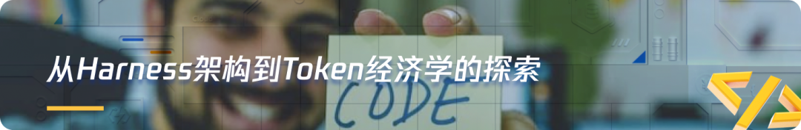